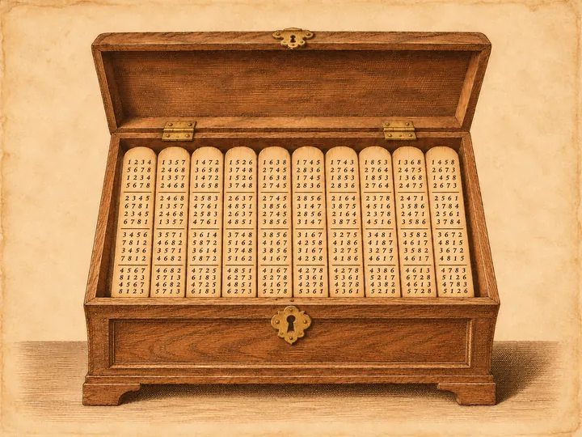
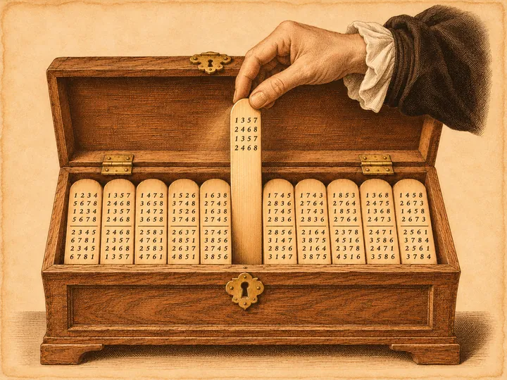
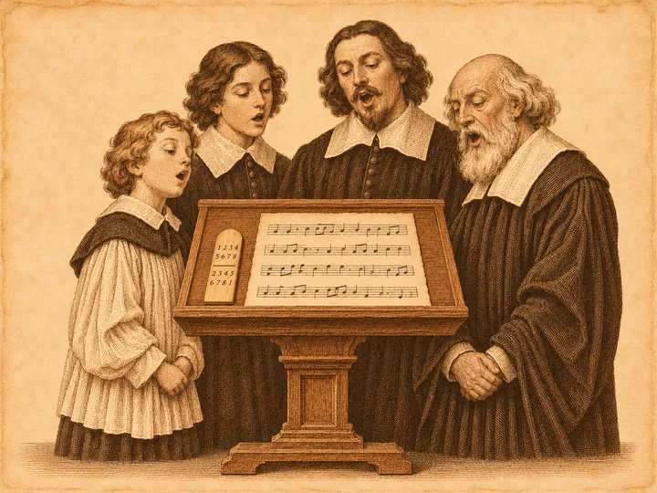

Kircher’s Arca Musarithmica
MUSURGIA UNIVERSALIS · ROME 1650
SYNTAGMA I · PLAIN COUNTERPOINT
In 1650 the scholar Athanasius Kircher built a box that writes music for four singers. You don’t need to know any music. Here is the whole idea:



Illustrations: the real ark’s sticks carry Kircher’s own tables, shown below.
Step 1
The ark reads your words in short pieces
Tap the second-to-last syllable to switch it between stressed and unstressed. It decides which board the stick comes from.
Your scale: each number is a step up
Step 2
Tap a column to hear that chord and see it on the scale.
Step 3
Kircher’s Arca Musarithmica appears in Book VIII of his Musurgia Universalis (Rome, 1650). The ark was a box of wooden rods, each painted with tables of numbers. For plain four-part writing (his first syntagma) the rods are grouped in boards called pinakes. The first two pinakes are for prose: Pinax I for phrases whose second-to-last syllable is long, Pinax II for those where it is short. Each has a rod for phrases of two, three, four, five and six syllables.
A rod holds ten blocks of four rows of numbers, one row for each voice: Cantus, Altus, Tenor and Bassus. The numbers 1 to 8 are steps of the scale of the chosen tone, with 1 and 8 the final. Under the numbers, the rod gives rhythms for duple and triple time. Choose one block and one rhythm, map the numbers to notes, and the four voices are written.